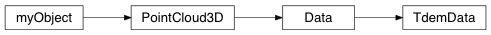

TemData¶
-
class
geobipy.src.classes.data.dataset.TdemData.TdemData(nPoints=1, nTimes=1, systems=None)¶ Time domain electro magnetic data set
A time domain data set with easting, northing, height, and elevation values. Each sounding in the data set can be given a receiver and transmitter loop.
TdemData(nPoints=1, nTimes=[1], nSystems=1)
Parameters: - nPoints (int, optional) – Number of soundings in the data file
- nTimes (array of ints, optional) – Array of size nSystemsx1 containing the number of time gates in each system
- nSystem (int, optional) – Number of measurement systems
Returns: out – Time domain data set
Return type: See also
read()- For information on file format
-
Bcast(world, root=0, system=None)¶ Broadcast the TdemData using MPI
-
Scatterv(starts, chunks, world, root=0, system=None)¶ Scatterv the TdemData using MPI
-
estimateAdditiveError()¶ Uses the late times after 1ms to estimate the additive errors and error bounds in the data.
-
fileInformation()¶ Description of PointCloud3D file.
Returns: out – File description. Return type: str
-
fromHdf(grp, **kwargs)¶ Reads the object from a HDF group
-
getDataPoint(i)¶ Get the ith data point from the data set
-
getLine(line)¶ Gets the data in the given line number
-
mapChannel(channel, system=0, *args, **kwargs)¶ Create a map of the specified data channel
-
pcolor(system=0, yAxis='index', **kwargs)¶ Plot the data in the given system as a 2D array
-
plot(system=0, channels=None, xAxis='index', **kwargs)¶ Plots the data
Parameters: - system (int) – System to plot
- channels (sequence of ints) – Channels to plot
-
read(dataFilename, systemFilename)¶ Reads the data and system parameters from file
Parameters: - dataFilename (str or list of str) – Time domain data file names
- systemFilename (str or list of str) – Time domain system file names
Notes
File Format
The data columns are read in according to the column names in the first line. The header line should contain at least the following column names. Extra columns may exist, but will be ignored. In this description, the column name or its alternatives are given followed by what the name represents. Optional columns are also described.
Required columns
- line
- Line number for the data point
- id or fid
- Id number of the data point, these be unique
- x or northing or n
- Northing co-ordinate of the data point
- y or easting or e
- Easting co-ordinate of the data point
- z or dtm or dem_elev or dem_np or topo
- Elevation of the ground at the data point
- alt or laser or bheight
- Altitude of the transmitter coil
- Off[0] to Off[nWindows] (with the number and brackets)
- The measurements for each time specified in the accompanying system file under Receiver Window Times
Optional columns
If any loop orientation columns are omitted the loop is assumed to be horizontal.
- TxPitch
- Pitch of the transmitter loop
- TxRoll
- Roll of the transmitter loop
- TxYaw
- Yaw of the transmitter loop
- RxPitch
- Pitch of the receiver loop
- RxRoll
- Roll of the receiver loop
- RxYaw
- Yaw of the receiver loop
- OffErr[0] to ErrOff[nWindows]
- Error estimates for the data
See also
INFORMATION()
-
readSystemFile(systemFilename)¶ Reads in the C++ system handler using the system file name
-
scatter2D(**kwargs)¶ Create a 2D scatter plot using the x, y coordinates.
Can take any other matplotlib arguments and keyword arguments e.g. markersize etc.
Parameters: - c (1D array_like or StatArray, optional) – Colour values of the points, default is the height of the points
- i (sequence of ints, optional) – Plot a subset of x, y, c, using the indices in i
See also
geobipy.customPlots.Scatter2D()- For additional keyword arguments you may use.
-
summary(out=False)¶ Display a summary of the TdemData
-
times(system=0)¶ Obtain the times from the system file